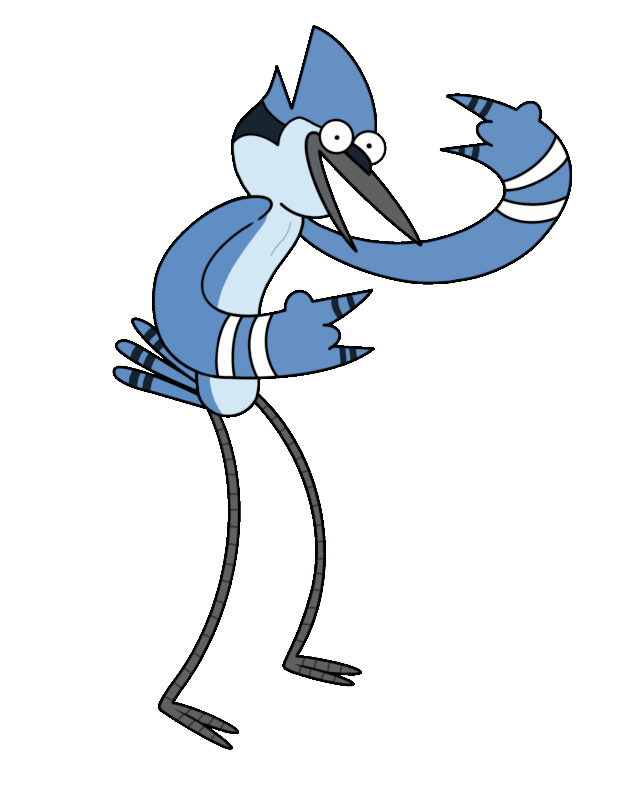

Personaggi Principali
Mordecai
È una ghiandaia azzurra ventitreenne che lavora nel parco con il suo amico Rigby. È più maturo e riflessivo rispetto a Rigby, ma anche lui finisce spesso nei guai. Mordecai ha avuto una cotta per Margaret e ha avuto una relazione con CJ. Nell'ultima puntata diventa un pittore e si sposa con Stef, da cui ha tre figli.